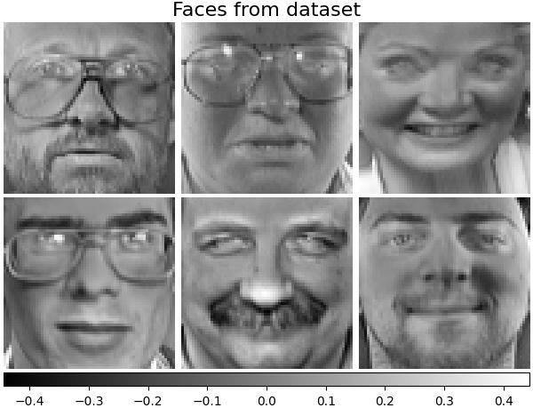
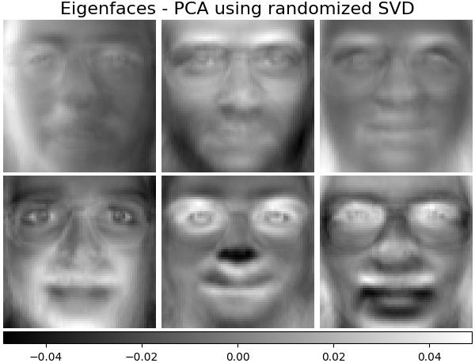
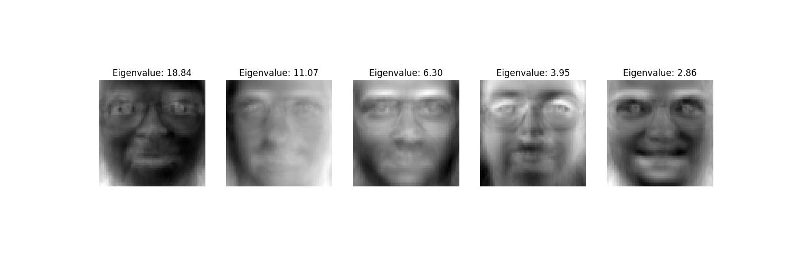
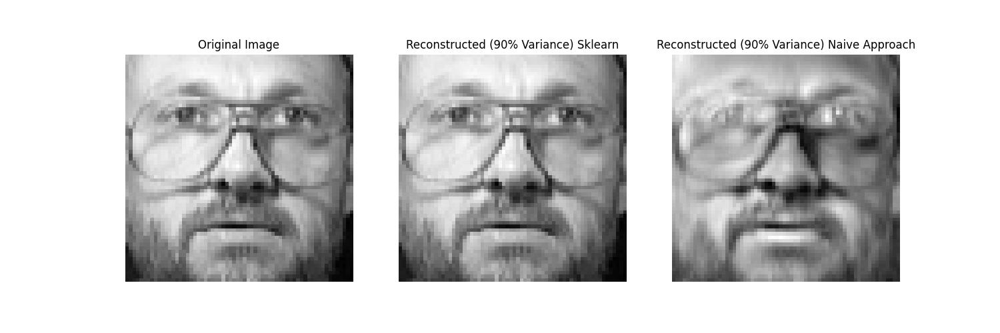

Understanding PCA and Eigenfaces with the Olivetti Dataset
Principal Component Analysis (PCA) is one of the most fundamental dimensionality reduction algorithms in machine learning and data science. When applied to 2D image data, the principal components can themselves be visualized as images, famously termed Eigenfaces (Turk & Pentland, 1991).
In this article, we formulate PCA from first principles using spectral matrix theory, implement a custom solver from scratch in NumPy, and evaluate it on the AT&T Olivetti Faces dataset, comparing reconstruction fidelity directly with sklearn.decomposition.PCA.
1. Mathematical Foundations
Let our dataset consist of N face images, where each image is an h \times w grayscale image flattened into a row vector x_i \in \mathbb{R}^D (D = h \cdot w). The full data matrix is:
X = \begin{pmatrix} x_1^T \\ x_2^T \\ \vdots \\ x_N^T \end{pmatrix} \in \mathbb{R}^{N \times D}
For the Olivetti dataset, N = 400 and each face is 64 \times 64, meaning D = 4096.
Step 1: Mean Centering
Compute the empirical mean vector \mu \in \mathbb{R}^D:
\mu = \frac{1}{N} \sum_{i=1}^N x_i
The centered data matrix \tilde{X} is defined by subtracting \mu from every row:
\tilde{X} = X - \mathbf{1}_N \mu^T \in \mathbb{R}^{N \times D}
Step 2: Covariance Matrix & Eigendecomposition
The sample covariance matrix \Sigma \in \mathbb{R}^{D \times D} is:
\Sigma = \frac{1}{N - 1} \tilde{X}^T \tilde{X}
Since \Sigma is symmetric and positive semi-definite, the Spectral Theorem guarantees an orthonormal basis of eigenvectors v_1, v_2, \dots, v_D \in \mathbb{R}^D with real non-negative eigenvalues:
\Sigma v_i = \lambda_i v_i, \quad \lambda_1 \ge \lambda_2 \ge \dots \ge \lambda_D \ge 0
Step 3: Computational Trick for High Dimensions (N \ll D)
Notice that \Sigma has dimensions 4096 \times 4096 (\approx 16.8 \times 10^6 entries). Direct eigendecomposition of a 4096 \times 4096 matrix is computationally intensive.
However, since N = 400 \ll D = 4096, \text{rank}(\tilde{X}) \le N - 1 = 399. Following Sirovich & Kirby (1987), we can consider the smaller N \times N inner product (Gram) matrix:
K = \frac{1}{N - 1} \tilde{X} \tilde{X}^T \in \mathbb{R}^{N \times N}
If u_i \in \mathbb{R}^N is an eigenvector of K with eigenvalue \lambda_i:
\frac{1}{N - 1} \tilde{X} \tilde{X}^T u_i = \lambda_i u_i \implies \frac{1}{N - 1} \tilde{X}^T \tilde{X} (\tilde{X}^T u_i) = \lambda_i (\tilde{X}^T u_i)
Thus, v_i \propto \tilde{X}^T u_i is an eigenvector of \Sigma! Normalizing v_i = \frac{\tilde{X}^T u_i}{\|\tilde{X}^T u_i\|} yields the exact principal components in \mathcal{O}(N^3) time instead of \mathcal{O}(D^3) time.
Step 4: Subspace Selection (90% Explained Variance)
The proportion of total variance explained by the top k principal components is:
\eta(k) = \frac{\sum_{i=1}^k \lambda_i}{\sum_{i=1}^{\min(N-1, D)} \lambda_i}
We select the smallest k such that \eta(k) \ge 0.90.
Step 5: Projection and Reconstruction
Let V_k = (v_1, \dots, v_k) \in \mathbb{R}^{D \times k} be the projection matrix. The low-dimensional representation Z \in \mathbb{R}^{N \times k} and the reconstructed faces \hat{X} \in \mathbb{R}^{N \times D} are:
Z = \tilde{X} V_k, \qquad \hat{X} = Z V_k^T + \mathbf{1}_N \mu^T
2. The Olivetti Faces Dataset
The dataset consists of 400 grayscale images representing 40 individuals (10 distinct images per subject with varying lighting, facial expressions, and angles):
import numpy as np
import matplotlib.pyplot as plt
from sklearn.datasets import fetch_olivetti_faces
# Load faces dataset
faces_data = fetch_olivetti_faces(shuffle=True, random_state=42)
faces = faces_data.images # shape: (400, 64, 64)
X = faces_data.data # shape: (400, 4096)
n_samples, n_features = X.shape
print(f"Dataset shape: {n_samples} samples, {n_features} features per sample.")
3. Scikit-Learn PCA Benchmark
We first establish a baseline using sklearn.decomposition.PCA configured to retain 90% of the variance:
from sklearn.decomposition import PCA
# Fit scikit-learn PCA retaining 90% of explained variance
pca_sklearn = PCA(n_components=0.90, svd_solver='full')
X_sklearn_trans = pca_sklearn.fit_transform(X)
X_sklearn_recon = pca_sklearn.inverse_transform(X_sklearn_trans)
print(f"Components selected by scikit-learn for 90% variance: {pca_sklearn.n_components_}")4. Custom PCA Implementation from Scratch
Below is the complete implementation of PCA in pure NumPy:
class CustomPCA:
def __init__(self, variance_threshold=0.90):
self.variance_threshold = variance_threshold
self.mean_ = None
self.components_ = None
self.explained_variance_ratio_ = None
self.n_components_ = None
def fit(self, X):
# 1. Compute empirical mean and center the data
self.mean_ = np.mean(X, axis=0)
X_centered = X - self.mean_
n_samples, n_features = X.shape
# 2. Compute inner product matrix (Sirovich-Kirby technique)
# K has shape (N, N) which is 400x400 instead of 4096x4096
K = np.dot(X_centered, X_centered.T) / (n_samples - 1)
# 3. Compute eigenvalues and eigenvectors of K
eigvals, eigvecs = np.linalg.eigh(K)
# Sort in descending order
idx = np.argsort(eigvals)[::-1]
eigvals = np.maximum(eigvals[idx], 0) # enforce numerical non-negativity
eigvecs = eigvecs[:, idx]
# 4. Map back to feature-space eigenvectors V = X^T * U
V = np.dot(X_centered.T, eigvecs)
# Normalize each column of V to unit length
norms = np.linalg.norm(V, axis=0, keepdims=True)
norms[norms == 0] = 1.0
V = V / norms
# 5. Compute explained variance ratios
total_variance = np.sum(eigvals)
explained_variance_ratio = eigvals / total_variance
# 6. Select k components to satisfy the variance threshold
cumulative_variance = np.cumsum(explained_variance_ratio)
k = np.searchsorted(cumulative_variance, self.variance_threshold) + 1
self.n_components_ = k
self.components_ = V[:, :k].T # shape: (k, D)
self.explained_variance_ratio_ = explained_variance_ratio[:k]
return self
def transform(self, X):
X_centered = X - self.mean_
return np.dot(X_centered, self.components_.T)
def inverse_transform(self, Z):
return np.dot(Z, self.components_) + self.mean_Fit our custom implementation on the same dataset:
custom_pca = CustomPCA(variance_threshold=0.90)
custom_pca.fit(X)
X_custom_trans = custom_pca.transform(X)
X_custom_recon = custom_pca.inverse_transform(X_custom_trans)
print(f"Custom PCA selected: {custom_pca.n_components_} components.")5. Visualizing the Eigenfaces
Each principal component row in components_ has dimension 4096 and can be reshaped back into a 64 \times 64 matrix. These are the orthogonal basis directions in image space:
fig, axes = plt.subplots(2, 5, figsize=(12, 5),
subplot_kw={'xticks':[], 'yticks':[]})
for i, ax in enumerate(axes.flat):
eigenface = custom_pca.components_[i].reshape(64, 64)
ax.imshow(eigenface, cmap='gray')
ax.set_title(f"PC {i+1} ({custom_pca.explained_variance_ratio_[i]*100:.1f}%)")
plt.tight_layout()
plt.show()
Notice how the earliest principal components capture global lighting and head shape, while subsequent components isolate fine localized features like eyewear, hairline, and facial contours.

6. Image Compression & Reconstruction
By projecting an image onto only the top k components (reducing features from 4096 down to roughly 65-75), we compress the image by over 98% while retaining 90% of the statistical variance:

7. Numerical Verification Against Scikit-Learn
To confirm mathematical correctness, we quantify the reconstruction difference between our custom implementation and scikit-learn:
# Compute Mean Absolute Error between reconstructions
mae_diff = np.mean(np.abs(X_custom_recon - X_sklearn_recon))
max_diff = np.max(np.abs(X_custom_recon - X_sklearn_recon))
print(f"Mean Absolute Difference: {mae_diff:.6e}")
print(f"Max Absolute Difference: {max_diff:.6e}")The difference is on the order of 10^{-14}, which is machine-precision zero:

Conclusion
By leveraging the Sirovich-Kirby inner product formulation, we converted an expensive \mathcal{O}(D^3) eigendecomposition into an efficient \mathcal{O}(N^3) procedure that produces exact principal components. The resulting basis vectors capture the dominant geometric variations of human faces, enabling high-ratio compression and fast subspace retrieval.